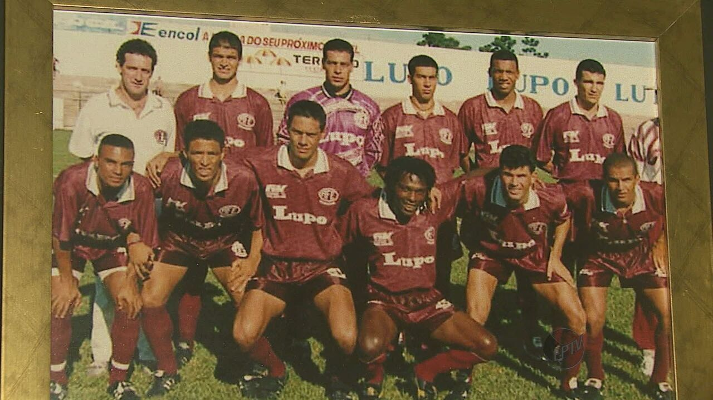

Associação Ferroviária de Esportes

A Associação Ferroviária de Esportes (mais conhecida apenas como Ferroviária) é um clube de futebol brasileiro da cidade de Araraquara, interior do estado de São Paulo. Foi fundada em 12 de abril de 1950 e suas cores são grená e branco. Já a Ferroviária S/A foi estabelecida em 11 de novembro de 2003. Permaneceu 30 anos seguidos na elite do Campeonato Paulista, além de ter participações na Série A do Campeonato Brasileiro e na Copa do Brasil. Manda seus jogos no estádio Doutor Adhemar de Barros (popularmente conhecida como Arena da Fonte) Em 2024, a Ferroviária irá disputar a Série A2 do Campeonato Paulista e a Série C do Campeonato Brasileiro.
Em 1950, um grupo de engenheiros e demais servidores da Estrada de Ferro Araraquara (EFA) reuniu-se no salão de festas do Clube 22 de Agosto. O encontro havia sido articulado pelo engenheiro Antonio Tavares Pereira Lima. Era sua intenção fundar um clube esportivo de empregados da EFA. Esclareceu a todos as linhas gerais do seu plano, com o propósito de conseguir os recursos necessários à manutenção da entidade. A Pereira Lima se deve a fundação do clube e o nome "Associação Ferroviária de Esportes" (O seu distintivo ficou sendo o mesmo da EFA, porém com as letras ao contrário: AFE). Ele desejava para a AFE as mesmas cores utilizadas pela seleção carioca de futebol (azul "guanabara" e branco), sua ideia causou leve discórdia, pois os outros integrantes da EFA não concordaram com as cores escolhidas. Por isso, venceu a combinação grená e branco, idêntica à do Clube Atlético Juventus. Não houve confusão, mas debates a respeito do que melhor poderia representar o clube, e venceu, por sugestão de Silvio Barini, a cor grená porque era semelhante àquela que distinguia as locomotivas da EFA (depoimento de Jacob Martins no livro "Fonte Luminosa"). Talvez por isso, quando mais tarde fundou a Associação Desportiva Araraquara (ADA), Pereira Lima não abriu mão das suas cores preferidas. Pereira Lima adotou as cores azul e branca para a ADA, resultado da fusão do Paulista FC e do São Paulo de Araraquara, porque são as cores da cidade e era a cor da camisa da Associação Atlética Araraquara que existiu de 1927 a 1930 (depoimento de Arnaldo de Araujo Zocco e noticiado no jornal O Imparcial da data da fundação da ADA). Na mesma reunião que decidiu a cor da camisa, foi aclamada também a Diretoria provisória da Ferroviária, assim constituída: Presidente, Antonio Tavares Pereira Lima; Vice, Hermínio Amorim Júnior; Primeiro Secretário, Jacob Martins; Segundo Secretário, Ciro Campos; Primeiro Tesoureiro, Augusto Campos e Segundo Tesoureiro, Lázaro Ferreira de Almeida Júnior. Obtida a área de terreno, foi iniciada a construção do estádio de futebol, que mais tarde levaria o nome "Estádio Doutor Adhemar de Barros", em homenagem ao conhecido político. Hoje, popularizou-se chamar o estádio de "Fonte Luminosa", mas alguns radialistas ainda dizem, quando estão transmitindo jogos em Araraquara: "Estamos falando do estádio Dr. Adhemar Pereira de Barros…" Foi constituída uma comissão encarregada de angariar fundos, integrada por Abel de Almeida Magalhães, Francisco Eugênio de Campos Júnior, Orlando Drumont Murgel, Jader Lessa Cesar, Amador Galucci, Frederico Meller, Orlando Mantezi, Azor Garcia dos Santos, Dorival Carvalho e Antonio de Barros Serra. Dez cruzeiros seria a quantia a ser paga pelo associado, a partir de junho de 1950.
A ideia da criação de uma empresa para a exploração das atividades de futebol da AFE nasceu no gabinete do Prefeito Municipal de Araraquara, Edinho Silva e foi pauta de várias reuniões entre o Prefeito e diversos simpatizantes e torcedores de futebol da gloriosa AFE, que queriam ver o clube brilhar ainda mais. Em 11 de novembro de 2003 realizou-se a Assembleia Geral de Constituição que declarou formalmente constituída a Ferroviária Futebol S/A, elegendo o Conselho de Administração da Empresa, que a seguir elegeu a primeira diretoria, com mandato até abril de 2004. O contrato foi registrado na Junta Comercial do Estado em 3 de dezembro de 2003. O primeiro corpo administrativo da Ferroviária S/A ficou assim definido: Valdir Massucato (Diretor Presidente), Waldemar Paschoalino Júnior (Diretor Vice-presidente), Bruno José Ópice de Mattos (Diretor Administrativo/Financeiro) e Osmar Alberto Volpe (Diretor de Futebol). No início da constituição da S/A, algumas parcerias foram fundamentais para o sucesso do clube-empresa. É importante destacar ações conjuntas entre S/A e empresas como Lupo, Unimed, Patrezão, Empresa Cruz, Usina Maringá, Uniara, Viação Paraty, entre outras que de forma direta ou indireta participaram do ressurgimento da querida Ferroviária de Araraquara. Ao mesmo tempo, como compromisso com torcida e a cidade, traçou-se como objetivo o acesso às divisões superiores do Futebol Paulista em curto espaço de tempo. No primeiro semestre de 2006, a locomotiva grená quase chegou ao acesso à Série A2. Apesar de não conseguir o acesso em 2006, a diretoria da Ferroviária seguiu firme em busca dos objetivos traçados, e, como consequência do trabalho honesto, transparente e de muita competência, a ferrinha sagrou-se campeã da Copa Federação Paulista nesse ano, batendo o bicho-papão Bragantino e calando o estádio Marcelo Estefani, com mais de 10 mil torcedores. Hoje, a Ferroviária está na Série A1 do Campeonato Paulista, após campanha vitoriosa na Série A2 2015. Pelo segundo ano consecutivo, a Locomotiva jogará a Copa do Brasil. No dia 25 dezembro de 2020 após notícias publicadas na Folha de S.Paulo e portal Uol, Saul Klein, principal investidor comunicou que estava se desligando, temporariamente, do Comitê Gestor de Futebol da Ferroviária.
Em 1951, logo no ano seguinte ao de sua fundação, a Ferroviária já disputou a sua primeira competição oficial. Foi o Campeonato Paulista da Série A2, onde ficou em 3.° lugar de 11 clubes que disputavam o grupo da Zona Central, não conseguindo a vaga para a próxima fase. Em 1952 a equipe demonstrou sua força, terminando como 1.° colocado da 1.ª fase e da 2.ª fase. O sonho da população de Araraquara de ver uma de suas equipes na elite do futebol paulista estava próximo da realidade. No entanto, o acesso era apenas reservado ao campeão. O sonho afeano foi adiado pelo Linense, que goleou o Ferroviária por 3 a 0 na final disputada no Pacaembu. Em 1953 a Ferroviária bate na trave novamente: depois de dominar o seu grupo na 1.ª fase, a equipe terminou em 2.° lugar no hexagonal final conquistado pelo Noroeste de Bauru. Em 1954 o time de Araraquara sequer passa da 1.ª Fase. Mas em 1955, o sonho araraquarense enfim se torna realidade. Depois de liderar seu grupo na 1.ª fase, a Ferroviária disputou a 2.ª fase com mais 7 times já no ano de 1956. No dia 16 de abril de 1956, a Ferroviária goleou seu maior rival, o Botafogo de Ribeirão (2.° colocado) por 6 a 3, num jogo histórico realizado na Fonte Luminosa lotada. Com esse resultado, a Ferroviária garantiu o acesso à Série A1 do Campeonato Paulista e conquistou seu primeiro título na história. Inaugura-se um novo capítulo na história do time grená. Durante partida válida pela Segunda Divisão de 1955, ocorreu a maior goleada da história do clube, 15 x 1 contra o Velo Clube, campeonato que terminou com o título da Ferroviária.
No ano de 1956 a Ferroviária disputou pela primeira vez a Série A1 do Campeonato Paulista, terminando na tímida 12.ª colocação dentre 18 equipes participantes. Em 1957 o time grená não passa da 15.ª colocação. Embora a campanha não tivesse sido das melhores, foi em 1957 que a AFE conseguiu sua primeira vitória sobre um grande clube: 3 a 2 sobre o Santos, na Fonte Luminosa. Em 1958 a Ferroviária termina em 11.º lugar, derrubando o campeão Santos por 2 a 1 dentro de Araraquara. Em 1959, a Ferroviária realiza a sua maior campanha na história do Campeonato Paulista da Série A1, terminando na histórica 3.ª posição, atrás apenas de Palmeiras e Santos. Em 38 jogos, foram 23 vitórias, 7 empates e apenas 8 derrotas, com destaque para a vitória sobre o Corinthians, por 3 a 1, em Araraquara. Após a gloriosa campanha de 1959, a Ferroviária massacrou o Fluminense em 16 de março de 1960, em amistoso realizado em Araraquara: vitória por 5 a 1 da Ferroviária diante do tricolor carioca. A Ferroviária realizou sua primeira excursão ao exterior no ano de 1960, enfrentando conhecidas equipes do futebol mundial. Enfrentou por 2 vezes o Sporting CP, perdendo o primeiro jogo por 1 a 0 e empatando o segundo, em 1 a 1. Também duelou contra o Atlético de Madrid, empatando em 1 a 1. O grande feito da equipe de Araraquara em seus jogos na península ibérica foi a histórica vitória por 2 a 0, diante do Futebol Clube do Porto, em 08 de maio de 1960. Ainda em 1960, a Ferroviária conquistou um bom 6.º lugar no Campeonato Paulista, vencendo todos os 4 grandes clubes de São Paulo. Dentro da capital, vitórias por 3 a 1 sobre o São Paulo e goleada de 4 a 1 em cima do Palmeiras. Em Araraquara, vitória por 2 a 1 contra o Corinthians, além do histórico 4 a 0 sobre o Santos de Pelé, campeão paulista naquele ano, em 4 de setembro de 1960. A história de sucesso da Ferroviária na Série A1 do Campeonato Paulista continuou em 1961, quando terminou em 5.º lugar, sendo a melhor equipe do interior naquele ano, com direito a duas vitórias diante do Corinthians por 2 a 1, sendo uma delas em Araraquara e a outra dentro de São Paulo. Em 1962 a ferrinha termina em 7.º lugar, vencendo em casa o Palmeiras por 3 a 1, e derrubando por 2 vezes o tricolor do Morumbi: 4 a 1 dentro de São Paulo e 2 a 0 dentro de Araraquara. Em 1963 o time de Araraquara termina na 6.ª colocação, novamente massacrando o Santos de Pelé: vitórias por 4 a 1 dentro de Araraquara e por 5 a 1 dentro da Vila Belmiro. Nesse mesmo ano a Ferroviária excursionou pela Colômbia, enfrentando grandes equipes do futebol sul-americano. Destaque para os duelos contra Once Caldas (derrota por 5 a 4) e Nacional de Medellín (vitória por 6 a 0). No ano seguinte, em 1964, a Ferroviária terminou o Campeonato Paulista apenas na 13.ª colocação, sem vencer nenhuma grande equipe. Era o prenúncio de que tempos difíceis estariam por vir.
O ano de 1965 foi um dos mais tristes da história da Ferroviária. Após grandes campanhas no Campeonato Paulista dos anos anteriores, a equipe afeana terminou o torneio de 1965 em último lugar (16.ª colocação), sendo rebaixada para a Série A2 após 10 (dez) anos consecutivos na elite do futebol paulista. Durante a campanha do rebaixamento, a Ferroviária ainda assim conseguiu vencer em casa o Corinthians, por 2 a 1. De volta à Série A2 em 1966, o time de Araraquara não se abalou, dominando a competição do início ao fim. Após conquistar o 1.º lugar na primeira fase e na segunda fase, o adversário da final seria o XV de Piracicaba, em 2 (dois) jogos no estádio do Pacaembu. O 1.º jogo da decisão terminou empatado em 1 a 1. No 2.º jogo, a Ferroviária venceu o XV de Piracicaba por 1 a 0, para a alegria da cidade de Araraquara. Destarte, a Ferroviária não somente conquistou o acesso à Serie A1 no ano seguinte, como de quebra conquistou o bicampeonato na Série A2 do Campeonato Paulista (1955-1966). Para comemorar a volta triunfal, a Ferroviária duelou na Fonte Luminosa contra o Cruzeiro, em partida amistosa. Tratou-se de verdadeiro duelo de campeões, tendo em vista que a equipe mineira havia vencido a Taça Brasil em 1966. O amistoso terminou empatado em 2 a 2.
Entre os anos de 1967 e 1969, a Ferroviária viveu talvez a maior era de sua história. Na época, o jornal Folha de S. Paulo premiava a melhor equipe do interior no Campeonato Paulista com um troféu. E a Ferroviária conquistou a taça durante 3 (três) vezes consecutivas (1967-1968-1969), tornando-se tricampeã do interior e ficando com a posse definitiva do valioso troféu. Na campanha de 1967 (6.º lugar no Campeonato Paulista), os maiores resultados foram as vitórias dentro da Fonte sobre o São Paulo, por 1 a 0, e sobre o Palmeiras, por 2 a 0. Na campanha de 1968 a AFE terminou o Campeonato Paulista em 3.º lugar, atrás apenas de Santos e Corinthians. Foram 11 vitórias, 8 empates e 7 derrotas no Paulistão. Na campanha histórica, venceu 2 (duas) vezes o São Paulo: 2 a 1 fora e 3 a 1 em casa. Também goleou o Palmeiras, por 3 a 0 na Fonte, e o Corinthians, por 4 a 1 dentro do Pacaembu. Para coroar o feito, em amistoso realizado na cidade de Araraquara em 9 de setembro de 1968, a Ferroviária massacrou o Nápoli da Itália, goleando por 4 a 0. A conquista definitiva do Troféu Folha de S. Paulo veio em 1969, com o tricampeonato do interior. Na ocasião, a Ferroviária terminou na 6.ª colocação, passando por cima de todos os 4 (quatro) grandes de São Paulo na Fonte Luminosa, durante a campanha: 1 a 0 no São Paulo, 2 a 1 no Palmeiras, 2 a 1 no campeão Santos e 2 a 1 sobre o Corinthians.
Após os grandes acontecimentos na história do clube, o time da Ferroviária viveu uma espécie de ressaca durante os anos 70. Disputou a Série A1 durante toda a década, mas sem as grandes campanhas do decênio anterior. Em 1970, após passar por um torneio qualificatório prévio, a Ferroviária conseguiu uma vaga para o seleto grupo de 10 times que disputaram o Campeonato Paulista daquele ano. Terminou em 7.º lugar, vencendo na Fonte o Santos por 1 a 0, além de também derrubar em Araraquara o campeão São Paulo, por 2 a 0. Em 1971, a Ferroviária fez história ao conquistar a famosa Taça dos Invictos, troféu destinado à equipe paulista que permanecesse invicta por maior número de jogos. Foram 14 (catorze) jogos de invencibilidade, de 3/10/1971 a 12/12/1971. A conquista da taça, que até então só havia ficado com os 4 (quatro) grandes de São Paulo e com Guarani e Ponte Preta, não podia ter ocorrido em ocasião mais especial: vitória sobre o rival Botafogo de Ribeirão, por 1 a 0 na Fonte. Na campanha de 1971, a Ferroviária goleou o Santos por 4 a 1, além de ter vencido o Palmeiras no Parque Antártica, por 3 a 2. Em 1972 a Ferroviária novamente passou pelo torneio classificatório prévio, terminando o Campeonato Paulista na 11.ª colocação. Todavia, não venceu nenhum grande clube. Em 1973 a equipe grená evolui, passando pelo qualificatório e terminando o Paulistão na 8.ª colocação, vencendo o São Paulo por 1 a 0 em Araraquara. No ano de 1974, a Ferroviária pela primeira vez não conseguiu passar do torneio preliminar, razão pela qual não enfrentou nenhum grande clube naquele ano. Em 1975 o time de Araraquara termina o Paulistão na 12.ª colocação, não obtendo nenhum resultado expressivo contra grandes clubes. O time grená repetiu a campanha em 1976, ano em que derrotou o Corinthians por 1 a 0 dentro do Pacaembu. Em 1977 a Ferroviária termina pela 3.ª (terceira) vez consecutiva no 12.º lugar, vencendo o São Paulo dentro do Morumbi pelo placar de 1 a 0. Em 1978 a Ferroviária termina o Paulistão apenas em 14.º lugar. Todavia, venceu o Corinthians por 3 a 2 nesse ano. Em 1979 a equipe grená encerrou a "década da ressaca" com um desempenho melhor que o dos anos anteriores. Por muito pouco a ferrinha não conquistou uma vaga na semifinal da competição, perdendo a mesma para o Corinthians, nos critérios de desempate. O destaque foi a vitória sobre o São Paulo por 2 a 0 no Morumbi.
No ano de 1980, a Ferroviária não fez uma campanha brilhante no Campeonato Paulista, terminando a competição na 13.ª colocação. O grande resultado da campanha foi a vitória sobre o Palmeiras por 2 a 0 dentro do Parque Antártica. Todavia, foi justamente em 1980 que a Ferroviária disputou pela primeira vez uma competição nacional oficial, qual seja, o Campeonato Brasileiro da Série B (denominado na época de Taça de Prata). Após terminar a 1.ª Fase em 2.º lugar de um grupo de 8 times, a Ferroviária avançou para a fase seguinte. Na 2.ª fase, a Ferroviária enfrentou Uberaba (MG), ABC (RN), Juventus (SP) e América (MG), terminando em 1.º lugar do grupo e classificando-se para a semifinal da competição. Caso a equipe de Araraquara passasse pelo CSA (AL) na semifinal, conseguiria o acesso para a Série A do Brasileiro. Todavia, o sonho afeano esbarrou na equipe alagoana. No jogo de ida em Maceió, vitória do CSA por 1 a 0. Na volta em Araraquara, nova vitória da equipe alagoana, pelo mesmo placar. Em 1981, a Ferroviária terminou o 1.º turno do Paulistão em 17.º lugar, melhorando no 2.º turno, quando terminou na 9.ª colocação. O campeão paulista daquele ano foi o São Paulo. Ainda assim, o tricolor do Morumbi perdeu 2 (duas) vezes para a AFE. Vitória grená por 2 a 1 no Pacaembu, e por 1 a 0 na Fonte. O time de Araraquara também obteve êxito contra o Palmeiras no Parque Antártica, vencendo por 1 a 0, além de ter derrubado o Santos por 1 a 0 dentro da Fonte. Ainda em 1981, a Ferroviária disputou o Campeonato Brasileiro da Série B (Taça de Prata), só que sem o sucesso do ano anterior. Terminou na 5.ª colocação do Grupo F, que contava com Palmeiras, Comercial (RS), Internacional de Santa Maria (RS), São Paulo de Rio Grande (RS), Criciúma (SC), Novo Hamburgo (RS) e América (SP). O ano de 1982 foi de extrema importância para a Ferroviária. Na época, as vagas no Campeonato Brasileiro da Série A (Taça de Ouro) eram conseguidas com base no desempenho das equipes no Campeonato Estadual. Fora da Taça de Prata, só restava à Ferroviária uma grande campanha no Campeonato Paulista para alcançar o sonho de adentrar na elite do futebol brasileiro. No 1.º turno do Paulistão, a Ferroviária não passou de um 15.º lugar. Mas no 2.º turno, o esquadrão grená brilhou, com direito à vitória sobre o Santos por 2 a 1, em plena Vila Belmiro. Destarte, a Ferroviária terminou o 2.º turno do Paulistão na 4.ª colocação, atrás apenas de São Paulo, Corinthians e Palmeiras. Na soma da pontuação dos 2 (dois) turnos, o time grená ficou em 6.º lugar, carimbando o passaporte para a Série A do Campeonato Brasileiro de 1983. No aguardado ano de 1983, a Ferroviária fez uma campanha decepcionante no Campeonato Paulista, ficando em último lugar de seu grupo. Ainda assim, conseguiu golear o Santos por 3 a 0 na Fonte Luminosa. Já na Série A do Campeonato Brasileiro (Taça de Ouro), a Ferroviária fez história. O time grená caiu no Grupo G, junto com Internacional (RS), Botafogo (RJ), Colorado (PR) e Brasília (DF). Para se classificar para a próxima fase, a AFE necessitava ficar entre os três primeiros do grupo. Acabou terminando na 1.ª colocação, com direito a duas vitórias sobre o Botafogo (1 a 0 no Maracanã e 2 a 1 na Fonte Luminosa), e uma vitória e um empate contra o Internacional (2 a 0 na Fonte Luminosa e 0 a 0 no Beira Rio). Na 2.ª Fase, a Ferroviária caiu no Grupo O, junto com Atlético PR, América de Natal (RN) e o rival Botafogo de Ribeirão (SP). Venceu duas vezes o América RN (3 a 1 em Natal e 5 a 1 em Araraquara), empatou duas vezes contra o Atlético PR (1 a 1 em Curitiba e 0 a 0 na Fonte), e levou a melhor nos duelos contra o rival Botafogo SP (1 a 0 em Araraquara e 0 a 0 em Ribeirão Preto). Novamente a Ferroviária avançou para a fase seguinte. Na 3.ª fase, a missão da ferrinha não era fácil, pois o grupo contava com São Paulo (SP), Grêmio (RS) e Sport (PE). A Ferroviária terminou em 4.º lugar no grupo. O grande destaque foi a vitória na última rodada diante do Grêmio, em pleno estádio Olímpico, por 3 a 1, no dia 30 de abril de 1983. A derrota em casa para a ferrinha custou a eliminação do Grêmio, o time que conquistaria o Mundial Interclubes naquele ano. Mesmo eliminada, a Ferroviária honrou a camisa grená e deu várias alegrias para a cidade de Araraquara no ano de 1983. Terminou o Brasileirão na 12.ª colocação entre 44 equipes, com 9 vitórias, 6 empates e apenas 5 derrotas, com direito a vitórias sobre gigantes do futebol brasileiro, como o Grêmio, o Internacional e o Botafogo. No ano de 1984, a Ferroviária não fez uma boa campanha no Campeonato Paulista. Terminou em 17.º lugar e por muito pouco a equipe de Araraquara não foi rebaixada. Mesmo com a campanha fraca, o time grená venceu o São Paulo por 3 a 1 na Fonte Luminosa. Já em 1985, a camisa grená novamente brilhou, desta vez no Campeonato Paulista. A Ferroviária terminou o 1.º turno em 10.º lugar, com direito a uma importante vitória sobre o Corinthians, por 2 a 1, na Fonte Luminosa. Já no 2.º turno, a Ferroviária terminou na honrosa 3.ª colocação, tendo ganho do Santos por 1 a 0, na Fonte Luminosa. No somatório dos dois turnos, a Ferroviária terminou em 4.º lugar, carimbando o passaporte para a semifinal do Paulistão e deixando a cidade de Araraquara em festa. Na primeira semifinal, o São Paulo acabou passando pelo Guarani. Já na segunda semifinal, o confronto era entre Portuguesa e Ferroviária. No jogo de ida, com a Fonte Luminosa lotada, a Ferroviária empatou com a Lusa em 2 a 2. Já no jogo de volta, no Canindé, a Portuguesa venceu a Ferroviária por 2 a 0, acabando com o sonho do título paulista e encerrando a "Era de Ouro" da Ferroviária.
Após a campanha histórica de 1985, a Ferroviária fez uma campanha apenas intermediária no Paulistão de 1986, terminando na 13.ª colocação. Nesse ano, conquistou uma goleada sobre o Santos por 3 a 0 na Fonte Luminosa. Em 1987, a Ferroviária terminou em 14.º lugar, com destaque para a vitória sobre o Palmeiras por 1 a 0 em Araraquara. No ano de 1988, a Ferroviária alcançou a 11.ª colocação no Paulistão, derrubando o campeão Corinthians por 3 a 2 em Araraquara. No segundo semestre, a Ferroviária voltou a disputar o Campeonato Brasileiro, desta vez na Série C, sendo eliminada na Segunda Fase da competição. Já no ano de 1989, a Ferroviária não conseguiu realizar uma boa campanha no Paulistão, terminando a competição no 18.º lugar geral, sem conseguir vencer nenhum grande clube paulista. Todavia, em 1990, a Ferroviária melhorou sua campanha, terminando em 3.º lugar de seu grupo na 1.ª fase, voltando a vencer um grande da capital (3 a 2 em cima do São Paulo na Fonte Luminosa). No entanto, na 2.ª fase, o esquadrão grená não teve tanto êxito, terminando na 7.ª e última colocação de seu grupo. No ano de 1991, seguindo uma nova metodologia, o Paulistão foi dividido em Grupo Verde e Grupo Amarelo. Em razão da boa campanha grená no ano anterior, a Ferroviária conseguiu disputar o Grupo Verde, que reunia as grandes equipes do estado. Porém, a campanha não foi boa, terminando a Ferroviária no 13.º e penúltimo lugar do grupo. Essa fraca campanha obrigou o time de Araraquara a disputar o Grupo Amarelo em 1992, uma espécie de "segunda divisão", de modo que nenhuma grande equipe do estado jogou com a ferrinha nesse ano. O 9.º lugar manteve a Ferroviária no Grupo Amarelo. Todavia, todo o insucesso com que a Ferroviária havia iniciado a década de 90 foi compensado no ano de 1993. Após a exitosa segunda colocação no Grupo B (que reunia equipes de nível inferior), a Ferroviária não somente conquistou o direito de disputar a Série A1 no ano seguinte, como também carimbou uma vaga no Quadrangular Semifinal do Paulistão daquele ano. A Fonte Luminosa voltou a receber grandes públicos e o torcedor de Araraquara voltou a sentir orgulho do time de sua cidade. Duelando contra o Palmeiras (campeão daquele ano), o Guarani e o Rio Branco de Americana, a Ferroviária terminou o quadrangular na 3.ª colocação, garantindo o 6.º lugar geral no Paulistão de 1993. O ano seguinte também foi de sucesso para a ferrinha. Em 1994, a Ferroviária ficou em 12.º lugar no Paulistão, voltando a vencer um grande clube (vitória em casa sobre o Santos por 2 a 1), o que não acontecia há mais de 4 anos. Mas foi no Campeonato Brasileiro da Série C que o time de Araraquara fez uma campanha memorável. Após uma campanha irregular na 1.ª fase, a Ferroviária foi para a fase de "mata-mata" com poucas esperanças de sucesso. Mas com o passar das fases, o time foi embalando e a camisa grená foi pesando. Na 2.ª fase, a Ferroviária eliminou o Matsubara-PR. Nas oitavas de final, a vítima foi o Vila Nova-GO. Nas quartas de final, a ferrinha eliminou o Valeriodoce-MG, ficando a apenas um passo do acesso. Na decisiva semifinal, a Ferroviária duelou contra o Catuense da Bahia. O time grená perdeu o jogo de ida no interior baiano, por 1 a 0. Mas na partida de volta, com o apoio maciço da torcida, a Ferroviária venceu o Catuense por 2 a 0 e garantiu o acesso para a Série B do Campeonato Brasileiro. De quebra, o time grená disputou sua primeira final a nível nacional, ficando com o vice-campeonato da Série C de 1994 após perder a final para o Novorizontino (derrota por 1 a 0 em casa, e por 5 a 0 fora). Em 1995, a Ferroviária terminou o Paulistão da Série A1 na 13.ª colocação, escapando por muito pouco do rebaixamento. Mesmo com a má campanha, o time grená ainda conseguiu vencer o São Paulo por 1 a 0 na Fonte Luminosa. No Campeonato Brasileiro da Série B, a ferrinha também conseguiu evitar o rebaixamento, terminando em 5.º lugar no grupo que contou com Coritiba-PR, Mogi Mirim-SP, Londrina-PR, Bangu-RJ e Ponte Preta-SP. Se a Ferroviária conseguiu se salvar em 1995, o mesmo não ocorreu no trágico ano de 1996. As péssimas condições financeiras do clube se refletiram em campo, de modo que a Ferroviária terminou a Série A1 na 16.ª e última colocação, tendo vencido apenas uma partida das trinta disputadas. Destarte, a Ferroviária acabou sendo rebaixada para a Série A2, tendo que disputar a segunda divisão do estadual após 30 anos consecutivos na elite do futebol paulista. Para piorar a situação, a Ferroviária abdicou do seu direito de disputar a Série B do Campeonato Brasileiro de 1996, diante das péssimas condições econômicas que afetaram a equipe.
Se o fato de disputar a Série A2 em 1997 parecia o fundo do poço para a Ferroviária, mal sabia a torcida que o pior ainda estaria por vir. Após uma péssima campanha na segunda divisão do estadual, onde terminou na última colocação de seu grupo, a Ferroviária acabou sendo rebaixada para a Série A3 - a terceira divisão do futebol paulista. Em 1998, na Série A3, após ter conquistado o 1.º lugar de seu grupo, a Ferroviária não conseguiu o retorno para a segunda divisão, ficando em 3.º lugar no quadrangular decisivo, vencido pelo Taubaté, que conquistou o acesso. Em 1999, a Ferroviária chega ao quadrangular final da Série A3 mais uma vez, novamente sem sucesso, ficando no 4.º lugar do grupo, vencido pelo Oeste de Itápolis. Todavia, no segundo semestre, o time grená surpreendeu ao chegar na semifinal da Copa São Paulo (atualmente conhecida como Copa Paulista), sendo eliminada pelo Etti Jundiaí após duas derrotas. No ano de 2000, a Ferroviária definitivamente chega ao fundo do poço. Após uma derrota na última rodada da Série A3 para o São Bento de Sorocaba, por 3 a 2, a Ferroviária foi rebaixada para a Série B1 - a quarta divisão do futebol paulista. Em 2001 a ferrinha terminou a Série B1 na 4.ª colocação, conseguindo o retorno para a Série A3 apenas em razão da criação do Torneio Rio São Paulo em 2002, o que gerou um remanejamento de times nas respectivas divisões. De volta à Série A3 em 2002, a Ferroviária terminou o campeonato apenas na 13.ª colocação. Todavia, ainda em 2002, a Ferroviária foi convidada para a disputa do Campeonato Brasileiro da Série C, terminando na 3.ª colocação de seu grupo e não conseguindo avançar para a fase seguinte. No ano seguinte, o inferno astral do time grená continuou: após uma derrota por 2 a 1 para o Palmeiras B, na última rodada, a Ferroviária terminou a Campeonato Paulista da Série A3 de 2003 na última colocação de seu grupo, sendo novamente rebaixada para a Série B1. O vexame histórico originou uma série de mudanças estruturais e políticas na Ferroviária, que passou a se constituir numa S/A a partir do ano de 2004. As modificações surtiram efeito imediato, de modo que a Ferroviária terminou a Série B1 de 2004 na 2.ª colocação, garantindo o acesso para a Série A3 após uma vitória por 2 a 0 diante da Jalesense, em casa. O próximo objetivo seria o retorno para a segunda divisão. O sonho grená passou longe de ser realizado no ano de 2005, quando a ferrinha terminou apenas no 7.º lugar de seu grupo na Série A3. Todavia, em 2006, a Ferroviária conseguiu retornar ao quadrangular decisivo da Série A3 depois de 7 anos, após terminar o seu grupo na 1.ª colocação. A equipe de Araraquara duelou contra São José, XV de Jaú e Santacruzense na fase decisiva. Na última rodada do quadrangular, com a Fonte Luminosa lotada e precisando apenas do empate, a Ferroviária foi surpreendida pelo XV de Jaú, sendo derrotada em seus domínios por 2 a 0. O sonho do retorno à Série A2 havia sido adiado para o ano seguinte.Depois da trágica perda do acesso para o XV de Jaú, no primeiro semestre de 2006, o torcedor da Ferroviária havia perdido todas as esperanças que depositava na equipe. Restava ao time grená, no segundo semestre, a saga de disputar a Copa Federação Paulista de Futebol (atualmente denominada de Copa Paulista), uma difícil competição que naquele ano reuniu 32 equipes do futebol paulista (das Séries A1, A2 e A3), classificando apenas o campeão e o vice para competições nacionais (o campeão conquistava o direito de disputar a Copa do Brasil, enquanto o vice se classificava para o Campeonato Brasileiro da Série C). O pessimismo da torcida era evidente, principalmente após a eliminação para o Grêmio Barueri nas quartas de final da Copa FPF de 2005 e depois da recente perda do acesso para o XV de Jaú. Após uma primeira fase irregular, a Ferroviária conseguiu se classificar para as oitavas de final do torneio como uma das piores colocadas dentre os 16 times que avançaram. No entanto, quando do início do mata-mata, o time grená mostrou toda sua força, tradição e capacidade de recuperação. Nas oitavas de final, a Ferroviária eliminou o Itararé (vitória por 1 a 0 em casa e empate em 1 a 1 fora). Nas quartas de final, o time grená passou com facilidades pelo Guarani (duas vitórias: 5 a 2 em casa e 2 a 1 fora). A partir da decisiva semifinal, a Fonte Luminosa passou a receber grandes públicos, e a possibilidade de disputar uma competição nacional após muitos anos contagiou a torcida de Araraquara. Contra o São Bernardo, na semifinal, depois da vitória por 1 a 0 em casa, a Ferroviária necessitava de um empate dentro do ABC Paulista. E conseguiu. O empate fora de casa por 1 a 1 contra o São Bernardo garantiu a Ferroviária numa competição nacional depois de 5 anos, bem como deu ao time grená a possibilidade de disputar um título depois de 40 anos. O adversário da final era o Bragantino, equipe que disputava a Série A1 do Campeonato Paulista na ocasião e que também tentava quebrar um jejum de 16 anos sem conquistas. Apesar da superioridade de seu adversário, a Ferroviária não se intimidou, vencendo a partida de ida por 1 a 0 dentro de uma Fonte Luminosa completamente lotada. No jogo de volta, disputado em Bragança Paulista, a Ferroviária necessitava do empate para se sagrar campeã. Após levar o primeiro gol ainda no 1.º tempo, a Ferroviária conquistou o empate de forma heroica aos 40 minutos da segunda etapa, com um gol de cabeça do centro-avante Jackson, que calou o então lotado estádio Marcelo Stéfani. Com o empate em 1 a 1, a Ferroviária se sagrou campeã da Copa Paulista em 2006, quebrando um jejum de 40 anos sem títulos (o último havia sido a Série A2 em 1966). De quebra, a equipe de Araraquara conquistou o direito de disputar, pela primeira vez, a Copa do Brasil em 2007. O ano de 2006, que tinha tudo para ser considerado um ano trágico após a perda do acesso, terminou de forma feliz para o time da Ferroviária. Por essas razões, o dia 25 de novembro de 2006 para sempre ficará marcado na memória do torcedor grená como a data na qual a Ferroviária ressurgiu para o futebol, após longos anos de tristeza e decadência.
O ano de 2007 pode ser considerado como um ano de sucesso para a Ferroviária. Na Série A3 do Campeonato Paulista, a Ferroviária, durante a primeira fase, fez a melhor campanha dentre as 20 equipes, classificando-se para o quadrangular final. Duelando contra Olímpia, Linense e XV de Piracicaba, a ferrinha, ao contrário do ano anterior, não deixou escapar o acesso, retornando à Série A2 do Campeonato Paulista após 9 anos. Na Copa do Brasil de 2007, a Ferroviária duelou na primeira fase contra o Juventude (RS), equipe que, à época, disputava a Série A do Campeonato Brasileiro. Mesmo diante da defasagem financeira entre as duas equipes, em um jogo memorável, a Ferroviária venceu o Juventude por 3 a 1 dentro de Araraquara. No duelo de volta, em Caxias do Sul, o Juventude venceu por 2 a 0, eliminando a locomotiva pelo critério do gol marcado fora de casa. Já na Copa FPF de 2007, a Ferroviária novamente fez grande campanha e, por pouco, não conquistou o bicampeonato. Após eliminar o rival Botafogo de Ribeirão nas quartas de final, a equipe araraquarense foi eliminada na semifinal pelo Linense. No ano de 2008, em seu retorno à Série A2, a Ferroviária conseguiu se classificar para o quadrangular final da competição. Era a primeira vez que a Ferroviária chegava perto de retornar à sonhada elite do futebol paulista. Na fase final, todavia, a locomotiva decepcionou, ficando em último lugar de seu grupo, que também reunia Santo André, Botafogo de Ribeirão e União de São João. Em 2009, ante a reforma do Estádio da Fonte Luminosa, a Ferroviária teve que mandar os seus jogos no Estádio do Jardim Botânico. A mudança temporária de endereço não fez bem ao time grená, que, na Série A2 do Campeonato Paulista, ficou na última colocação de um total de 20 times, o que ocasionou o rebaixamento e retorno da equipe à Série A3 do Campeonato Paulista. De boas recordações do ano de 2009, fica apenas a inauguração da moderna Arena da Fonte, no dia 22 de outubro de 2009, em jogo válido pela Copa Paulista de Futebol, no qual a Ferroviária derrotou o Ituano por 2 a 1. A partida foi televisionada para todo o país por meio do canal Record News. No Campeonato Paulista da Série A3 de 2010, a Ferroviária conseguiu se classificar para o quadrangular final da competição, ocasião na qual o time grená fez campanha espetacular em um grupo composto por XV de Piracicaba, Comercial e XV de Jaú (4 vitórias, 1 empate e 1 derrota). Assim, a Ferroviária conquistou o acesso à Série A2 e a vaga na final do torneio, sagrando-se vice-campeã após derrotas para o Red Bull na decisão. De volta à Série A2 do Campeonato Paulista em 2011, a Ferroviária ficou apenas com a 7.ª colocação de seu grupo, composto por 10 equipes. O 13.º lugar na classificação geral (de um total de 20 equipes) manteve a equipe na segunda divisão do futebol de São Paulo. Na Copa Paulista, a Ferroviária voltou, após alguns anos, a atingir as fases finais da competição, sendo eliminada pelo Comercial de Ribeirão nas quartas de final. Já no ano de 2012, a Ferroviária teve a sua segunda oportunidade de retornar à elite do futebol paulista. Assim como em 2008, a Ferroviária conseguiu se classificar para o quadrangular final do Campeonato Paulista da Série A2. Na fase final, todavia, a ferrinha novamente decepcionou sua torcida, ficando em último lugar de um grupo que também reunia União Barbarense, Atlético de Sorocaba e Audax. Na Copa Paulista, a Ferroviária novamente fez uma ótima campanha, sendo eliminada na semifinal pelo time do Audax. Em 2013, a Ferroviária sofreu no Campeonato Paulista da Série A2. Na 16.ª colocação dentre um total de 20 equipes, a Ferroviária somente conseguiu escapar do rebaixamento na última rodada, após uma vitória por 1 a 0 sobre o Santo André e uma improvável combinação de resultados. Por sua vez, no ano de 2013, sob o sistema de pontos corridos, a Ferroviária não passou sustos, ficando na 9.ª colocação do Campeonato Paulista da Série A2, dentre um total de 20 equipes.No ano de 2015, o Campeonato Paulista da Série A2 novamente foi disputado sob o sistema de pontos corridos, com 20 equipes. Em um regulamento que premia a regularidade, a Ferroviária realizou uma campanha que beirou à perfeição. Sob o comando do técnico Milton Mendes, o esquadrão grená terminou o campeonato na 1.ª colocação, somando 44 pontos, com 14 vitórias, 2 empates e 3 derrotas. Foram 8 pontos de frente sobre o 2.º colocado. Durante a brilhante campanha, que contou com um aproveitamento de 77,2%, alguns jogos foram memoráveis, como a goleada por 7 a 1 sobre o Monte Azul, e a vitória por 4 a 0 sobre o Novorizontino, em um "jogo de 6 pontos", válido pela 16.ª rodada. O sucesso da locomotiva resgatou a paixão da torcida de Araraquara pelo time, tendo a Arena da Fonte recebido grandes públicos nos jogos contra o Novorizontino (16.ª Rodada - 8.605 pagantes) e contra o Guarani (última rodada - 13.660 pagantes). O acesso ocorreu em 18 de abril de 2015, em jogo válido pela 17.ª Rodada, após uma vitória por 1 a 0 contra o Guaratinguetá, no estádio Dario Rodrigues Leite. O gol de pênalti marcado pelo atacante Tiago Adan colocou a Ferroviária na primeira divisão do futebol paulista após um jejum de 19 anos. No dia do acesso, uma grande festa tomou conta das ruas de Araraquara. De quebra, a melhor campanha rendeu à Ferroviária o tricampeonato da Série A2 do Campeonato Paulista (1955-1966-2015). No ano de 2016, O campeonato Paulista da Série A1 foi disputado por 20 equipes divididos em 4 grupos. No entanto, um novo regulamento fez com que 6 times fossem rebaixados, ao invés de apenas 4 como nos anos anteriores, já que o campeonato do ano seguinte passará a ser disputado por apenas 18 clubes. A Ferroviária deu início ao campeonato acumulando uma série de vitórias, embalada pelo treinador português Sérgio Vieira, tendo como destaque um empate por 2 a 2 contra o Corinthians na Arena da Fonte e uma vitória de 2 a 1 sobre o Palmeiras em pleno Allianz Parque. Contudo, o time perdeu a sequência e passou a tropeçar constantemente, tendo o treinador demitido e chegando à reta final com risco de rebaixamento, salvando-se na última rodada e conseguindo garantir sua permanência para a disputa da Série A1 de 2017. Foram 17 pontos conquistados em 15 partidas disputadas, com 5 vitórias, 2 empates e 8 derrotas e um aproveitamento de 37,8%. Já na Copa do Brasil, a Ferroviária, sob o comando de Antonio Picoli, superou a campanha de 2007 e chegou à segunda fase, após eliminar o time do Salgueiro de Pernambuco com uma vitória em casa por 1 a 0 e um empate de 1 a 1 fora de casa na primeira fase. Em seguida, teve a oportunidade de enfrentar mais um dos grandes clubes do Brasil, o Fluminense do Rio de Janeiro. Na primeira partida, um empate de 3 a 3 na Arena da Fonte, após estar perdendo por 2 a 0. Apesar de não ter saído vitoriosa, a AFE conseguiu mais uma partida de destaque. Em Volta Redonda, no estado do Rio de Janeiro, o Fluminense obteve a vitória de 3 a 0 sobre o time araraquarense, classificando-se assim para a fase seguinte. Na Copa Paulista fez a melhor campanha da competição e disputou a final com o XV de Piracicaba. Após sofrer derrota fora de casa por 2 a 0 no primeiro jogo, a ferrinha marcou os três primeiros gols da segunda partida que terminou em 3 a 1 e o título foi decidido em cobranças de pênaltis, nas quais ficou com o vice-campeonato. Assim, a Ferroviária recebeu uma das vagas para disputa em competição nacional no próximo ano, já que o XV obteve o direito de escolha entre participar da Copa do Brasil ou da Série D do Campeonato Brasileiro, deixando a outra vaga à vice-campeã. Em 2017 a Ferroviária disputou novamente outra final de uma Copa Paulista, dessa vez contra o Inter de Limeira. Após o primeiro jogo terminar em empate por 0 a 0 fora de casa, houve também um empate no jogo realizado em casa por 2 a 2. Porém a Ferroviária sagrou-se campeã após vencer a disputa de pênaltis por 7 a 6, com grande atuação do goleiro Tadeu que fez duas defesas. Esse título classificou a Ferroviária a Série D de 2018. Em 2023 a Ferroviária foi rebaixada no Campeonato Paulista. Porém, também em 2023, a Ferroviária foi vice-campeã da Série D do Campeonato Brasileiro, conquistando o acesso para disputar a Série C em 2024.
No dia 13 de abril de 1988 a seleção pré-olímpica de cuba desembargou às 10h no Hotel Uirapuru se preparando para o duelo do dia seguinte, quando às 21h estava programado o confronto perante a Ferroviária na comemoração do aniversário natalício de 38 anos do time. O amistoso internacional contra a seleção cubana, foi precedido de bom cartaz. Por parte da diretoria da agremiação a expectativa era de um grande público, não apenas em função do jogo, mas para a festividade do aniversário da ferrinha. Com a presença de público diminuto para o confronto e para a comemoração de uma data festiva, Ferroviária e a Seleção Pré-Olímpica de Cuba duelaram no dia 14 de abril num amistoso de caráter internacional. As 20h45 min entrou em campo a Seleção de Cuba, enquanto às 20h50 min o trio de arbitragem se fez presente. Já às 20h51 min adentrou o gramado da Fonte a banda regimental do 13.º Batalhão Policial local. Só às 21h05 min adentrou em campo com um atraso injustificável por ser anfitriã. Com os jogadores e trio de arbitragem perfilado a banda executou os hinos nacionais, com o hasteamento das bandeiras de Cuba, do Brasil e da Ferroviária. Nos primeiros movimentos notou-se uma AFE quase desmantelada, dando muito espaço aos jogadores cubanos que tinham maior domínio territorial e que demonstravam mais velocidade. Logo aos 5 min, mercê do seu domínio e de sua melhor movimentação, não demorou muito para que Cuba chegasse na meta do arqueiro afeano. A bola foi lançada na grande área grená, onde Pietro golpeou de cabeça, para que a bola choca-se contra o travessão do arco guarnecido por Pavão. Num lance esporádico a bola foi lançada para a área cubana por duas vezes seguidas. A torcida não gostava da maneira com que a Ferroviária atuava, com Toquinho não conseguindo fazer a vigilância no adversário, e com Meinha e Helinho indo muito a frente, permitindo assim, que os cubanos se movimentassem com facilidade. Aos 31 min, Betão chutou forte, obrigando o goleiro cubano a praticar boa intervenção, mandando a bola para escanteio. Aos 39 min, Toquinho cobrou escanteio e Mauro Pastor levou a melhor de cabeça e a bola caiu nos pés de Valdo, que num lance infeliz, mandou a pelota para o fundo de sua própria rede, concedendo o empate da Ferroviária. No segundo tempo Clérice fez cinco alterações de uma só vez, contudo as mesmas não surtiram os efeitos desejados, permanecendo a equipe bastante desencontrada e após reagir e pressionar no final do primeiro tempo voltou a cair de produção na etapa final. A partida acabou ficando mais equilibrada nos últimos 15 min e o jogo terminou um mesmo empatada por 1 a 1. Antes de chegar na Morada do Sol, os compatriotas de Fidel Castro atuaram em Jundiaí e Limeira. Após ser recepcionada no hotel Uirapuru, onde comissão técnica e jogadores ficaram alojados até a iminência da partida.
Escalação do Ferroviária antes do Jogo